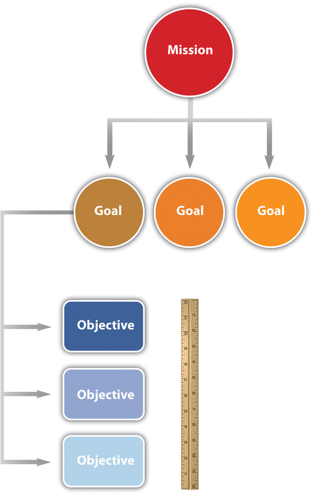
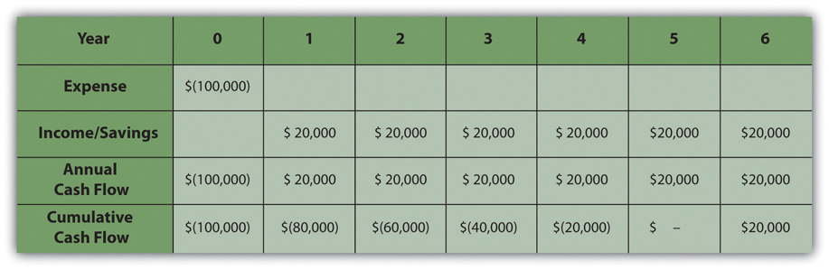
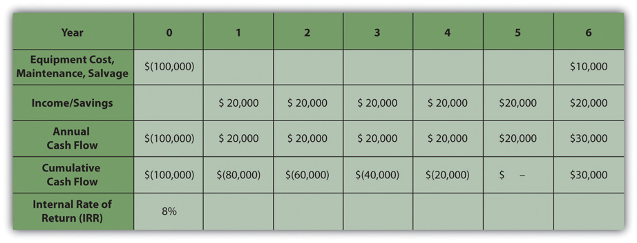
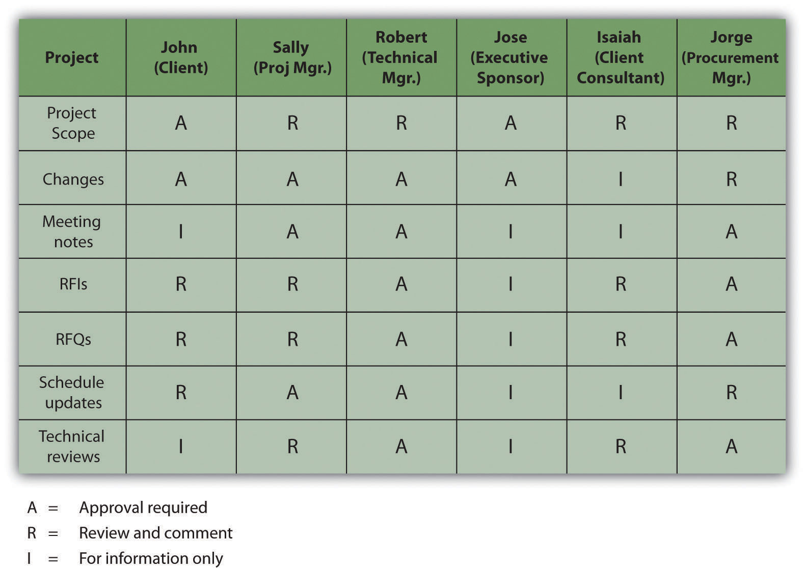

This chapter provides an overview of the selection and initiation of a project. Prior to the initiation of a project, the chartering organizationGroup that determines the need for the project.—the organization that determines the need for the project—develops a justification for the project. Often, several initiatives compete for the resources of the organization, and potential projects are evaluated to see which ones are best aligned with the mission and goals of the organization. This evaluation process can be very simple where the benefits to the organization are obvious and the economics of the project are very favorable. On larger, more complex initiatives, the process of gathering and evaluating the data to justify the project can take a year or more. The information gathered during this evaluation process provides the basis for the project charter, the initial scope of work, and other information required to initiate the project.
Projects are chosen for a variety of reasons and not all of them are apparent. The project manager must understand why a project was selected over other choices so that he or she can align the team toward justifying the choice that has been made by senior management.
The missionStatement of the purpose of an organization. of an organization is a statement of why it exists. For example, a police department might have its mission stated on the door of each patrol car—to protect and serve. A well-written mission statement is short and has the following sections:
The mission of the Philadelphia Police Department is to fight crime and the fear of crime, including terrorism, by working with our partners to enforce the laws, apprehend offenders, prevent crime from occurring, and improve the quality of life for all Philadelphians.Philadelphia Police Department, Philadelphia Police Department: Mission Statement, 2009, http://phillypolice.com/about/mission-statement (accessed July 16, 2009).
The missions of organizations can be categorized as profit, not for profit, and government. A business that is created to make a profit for its owners and stock holders must consider the cost of each project and how much profit it is likely to generate. The mission statement of a not-for-profit organization like a charity would emphasize the service it provides. A not-for-profit organization must control its costs so that it does not exceed its funding, and it is always seeking funding and is in competition with other not-for-profit organizations for funding from the same sources. A government agency, like a police department, is similar to a not-for-profit organization, but its sources of funding are usually taxes and fees. Its mission would include its responsibilities to the citizens it represents. Government organizations compete for funding from higher levels of government. Projects are more likely to be funded if the proposal for the project is closely aligned with the mission of the organization. The project manager must be aware of that mission while building a team and aligning it behind the purpose of the project.
Senior administrators of the organization decide on how to achieve the mission of the organization by choosing goals. For example, the director of a not-for-profit preschool that provides low-cost education for children of poor, single parents might set a goalAn end toward which effort is directed. of improving its reputation for quality. A goal is an end toward which effort is directed. The director meets with her staff and they consider several ways of achieving that goal. They decide to seek certification by a nationally known group that evaluates the quality of preschool programs. Obtaining this certification is an objectiveAn end toward which effort is directed that has a measurable outcome..
Figure 7.1 Relationships between Mission, Goals, and Objectives
In this text, we distinguish between the terms goals and objectives. An objective must have a measurable outcome. In this example, it is easy to measure whether or not the organization receives the certification, which is the distinguishing characteristic of an objective. The use of these terms is not standardized across the industry or in business, but we will be consistent within this text. To determine whether a statement is a goal or an objective, simply ask if there is a measurable outcome. Seeking the certification is an objective that can be met by treating it as a project that has a measurable outcome and a limited time frame.
If an organization’s mission is to make money, it will try to maximize the profits of the company by increasing the money coming in or decreasing the money going out. The flow of money is called cash flowThe movement of money where income is positive and spending is negative.. Money coming in is positive cash flow, and money going out is negative. The company can maximize profits by improving its operational efficiency or by executing projects. The company must raise money to fund projects. Companies can raise money in three ways:
If a company borrows money, it must pay back a portion of the amount it borrowed plus additional interestCharge for a loan.. The interest is a percentage of the amount of the loan that has not been repaid. The repayment of the loan and interest is usually paid quarterly or annually. To qualify for selection, a project that is intended to make or save money must be able to do the following:
When senior managers at a for-profit company decide which projects to fund, they must consider these economic issues.
To help managers choose between projects, they can use an unsophisticated measurement called simple paybackTime period it takes to recoup the original expense without considering interest payments or other complicating factors.. If the purpose of the project is to improve cash flow—make it more positive or less negative—the improved positive cash flow each year is applied to the original cost (negative cash flow) of the project to determine how many years it would take to pay back the original cost. It is assumed that after that date, the improved cash flow could be used for other purposes or paid out to owners. For example, if the company borrows $100,000 to fund the project and the project increases cash flow by $20,000 a year, the simple payback would be five years, as shown in Figure 7.3 "Simple Payback".
Figure 7.3 Simple Payback
The cash flow from each year is summed up in the cumulative cash flow row. When the cumulative cash flow becomes zero or positive, it means that the original cost has been paid back by the increased income or savings created by the investment.
Companies can use simple payback to establish a cutoff for project consideration. For example, management could declare that no projects will be considered that have a payback of more than three years. For projects that meet this criterion, projects with shorter simple payback periods would have an advantage in the selection process. Not-for-profit or government organizations are likely to approve projects with longer simple payback periods because they are not compared to other not-for-profit or government agencies based on their profitability.
Companies whose mission is to make a profit are usually trying to make more profit than their competitors. Simply paying back the loan is not sufficient. If the project involves buying and installing equipment to make a profit, executives can use another method called internal rate of return (IRR)Average annual return on an investment that earns or saves money.. The IRR is like an internal interest rate that can be used to compare the profitability of competing projects. To calculate an IRR, the company considers the cash flow each year for the expected life of the product of the project. It assumes that some of the annual cash flows will be negative and that they can vary from year to year due to other factors, such as lost production during changeover, periodic maintenance, and sale of used equipment. For example, a company decides to upgrade a manufacturing line with new equipment based on new technology. They know that the initial cash flow—shown in year zero—will be negative due to the expense of the conversion. They know that the new equipment has an expected life of six years before newer technologies make it out of date, at which time they can sell it for a certain salvage value. The inputs to the IRR calculation are the net cash flow for each year where at least one of them is negative and at least one of them is positive. The result is a percentage that indicates how well this project performs as an investment. Refer to Figure 7.5.
Figure 7.5
The internal rate of return measures the profitability of an investment.
The life of the equipment is part of the IRR calculation. If a project manager knows that senior management intends to sell the equipment in six years, team members can be made aware of that decision if it affects their choices.
Besides making money, there are many other reasons for a project to be selected, including the following:
The timing of the project can be very important. A project might be selected at a particular time of year for some of the following reasons:
If the project manager must make changes to the schedule at some point in the project that could affect its completion date, it is valuable to know if the project was selected because of timing.
In addition to knowing why a project was selected, it is valuable to know which senior executives supported or opposed the selection of the project and if the project manager’s supervisor was in favor of it or not. Because most project teams consist of people who do not report to the project manager but who report to other unit managers, they might not be available when you need them if their boss thinks other projects are more important. If a particular executive proposed the project and actively advocated for its approval, that person could be a source of support if the project runs into trouble and needs additional resources. A project championInfluential person who is willing to use his or her influence to help the project succeed., sometimes called an executive sponsor, is an influential person who is willing to use his or her influence to help the project succeed.
To identify the advocates and opponents of the project, begin by reading public documents (if available), such as the minutes of the meeting at which the project was approved. Next, the project manager can use his or her unofficial network of trusted colleagues to get their opinions. Those discussions should be informal and off the record. Those opinions might be inaccurate, but it is valuable to know what misunderstandings exist about a project. If executives in an organization are assigned as project sponsors, the project champion might be a different person.
When Vought Aircraft won a contract with Boeing to build a significant portion of the fuselage for the new 787 Dreamliner in Charleston, South Carolina, there was no existing workforce with aircraft experience. To give Vought Aircraft an incentive to locate the plant in South Carolina, Governor Mark Sanford, with the support of the legislature, committed to the recruitment and training of the workforce needed for the plant to be successful. The legislature provided several million dollars and assigned the role of developing a trained workforce to the South Carolina Technical College System and Trident Technical College, the local community college in Charleston, South Carolina.
Dr. Jim Hudgins, president of South Carolina’s Technical College System, assigned the most experienced project manager to the project and personally accepted the role of project sponsor.
Dr. Hudgins and Dr. Thornley, president of Trident Technical College, met with the project leadership at least monthly to review project plans and progress. Each month both Dr. Hudgins and Dr. Thornley assigned resources and removed barriers to project success. Dr. Thornley assigned procurement personnel to the project to assure materials were purchased and delivered in time to support the project schedule. She reallocated space to provide training laboratories for the project and assigned a college leader to the project full-time to coordinate actions with the college. Dr. Hudgins coordinated with the Governor’s office to assure the project received the appropriate level of support.
Both Dr. Hudgins and Dr. Thornley had the political power and the resources to assure the project had the autonomy and the resources to succeed. The project met every milestone, exceeded every measurable goal, and received high praise from Vought Management as the plant began operations on schedule.
Internalize your learning experience by preparing to discuss the following.
Choose an example from outside the assigned reading of a mission, goal, and objective that demonstrates the characteristics of each and how they relate to each other. The example can be from a real organization or it can be fictional. Describe the characteristics of a mission, goal, and objective, as defined in this chapter, and how the example demonstrates those characteristics.
The project scope identifies the total work of the project.
The scope documentWritten description of what activities are included in the project and some of those that are specifically not included. defines what tasks the project team is expected to accomplish and, just as importantly, what is not part of the project. Depending on the complexity level of the project, the scope document can be as short as one page or as long as several hundred pages. On more technical projects, such as a project to design an offshore wind-turbine farm, the scope would include a significant amount of technical specifications, with a focus on the electrical output from the wind turbines. The size and character of the project scope document is related to the project complexity. Higher scores on the Darnall-Preston Complexity Index indicate the need for more detailed scope documents.
A well-developed project scope statement provides the project team with information the team needs to design and implement the project execution plan. The well-developed project scope also provides the team with an understanding of the purpose of the project and the basis for defining project success.
An automotive company is building a new plant to produce electric passenger cars in the southeast United States. As the plant nears completion, the plant’s manager issues a contract to train the new plant workers. The training of workers who will be maintaining the production equipment will be done by the equipment suppliers and will not be in the scope of the training contract.
The scope of work for the training project will include the identification of the knowledge, skills, and abilities needed by each classification of worker and the development of the delivery methodology that will effectively and efficiently develop the identified knowledge, skills, and abilities (online, classroom, hands-on). The scope will also include delivery of the training, evaluation of the workers after training, and the development of training records. Items not included in the project scope are items that will be the responsibility of the automotive company, such as the selection and hiring of the workers and the provision of the automotive tools and equipment needed for training. These exclusions are specifically stated in the scope document.
During the design of the plant, the Human Resources Division of the company explored different workforce models. The plant will be a typical assembly operation working three shifts. Experience in other plants indicated that a team-based approach combined with a lean manufacturing philosophy produced the highest productivity. This information was included in the documents provided to the team developing the training project’s scope. The plant manager, the human resources manager, and the plant engineer reviewed and occasionally made changes to the draft training scope.
The scope of work for the training project was developed from a combination of information from experts with previous experience, documents that reflected the plant operation philosophy, and selected managers from operations and human resources. All the knowledge needed to develop the scope was within the automotive project team. Sometimes outside consultants are needed to develop a complete project scope. For example, if the team in our automotive training example did not have experience in the start-up of another automotive plant, then the hiring of a consultant with that experience might have been required to understand the entire scope of activities needed for training the automotive workforce.
The automotive project described above is a typical example of the types of information and the people involved in developing a project scope. From the information in the project description, the project team could develop a project scope document.
The project manager will often develop the first draft of the project scope and then solicit feedback and suggestions from the project team, client, and sometimes key vendors. The project manager will attempt to develop consensus around the project scope, but the final approval belongs to the project client or sponsor. Depending on the complexity profile of the project, the development of the project scope document can be a short discussion between the project manager and the client, or on a large, complex project, the process can take weeks.
The project scope is not a stagnant document, and changes are to be expected. Changes to the project scope are necessary to reflect new information. Changes to the project scope also create the opportunity for new purposes to emerge that will change the end results of the project. In some cases, these new results represent a positive outcome for the chartering organization.
If a minor change is made to the schedule that does not affect the completion date of the project, it is a deviation from the schedule. As long as the end date of the project or major objectives are not delayed, a formal change request to the client is not needed. Recording and communicating these schedule deviations is still important for coordinating resources and maintaining the client’s awareness of the project’s progress.
The labor cost was estimated at fifteen dollars per hour for cleaning the project office once per week. The winning bid for the contract was at sixteen dollars per hour. The cost deviated from the estimate and a change was made to the budget. This was a cost deviation, not a change in scope. The additional cost for the contract was covered from the project contingency reserves, and the budget was revised to reflect the changes.
Installation of a fence around the project site was delayed when the truck delivering the fence was wrecked on the way to the job site. The fence project was delayed by one week and the delay did not affect any other activity on the project. This deviation from the original schedule did not cause a delay in the project, and the schedule was adjusted as a deviation to the schedule—not a change request.
It is important to have a written record of changes to the scope of a project. On the least complex projects, an e-mail message can be sufficient, but on larger projects a standard form is normally used. The following steps are paraphrased by Tom Mochal,Tom Mochal and Jeff Mochal, Lessons in Project Management (Berkeley, CA: Apress, 2003). and they have the necessary components of a change documentation process:
Internalize your learning experience by preparing to discuss the following.
Describe a situation where the elements of the project scope did not specifically exclude an activity that caused a misunderstanding.
The parent organization’s decision-making process influences when start-up activities of the project will take place. The transition from planning to project initiation is typically marked by the decision to fund the project and selection of the project manager. However, selection of the project manager is not always the defining event. Some organizations will have the project manager involved in project evaluation activities, and some select the project manager after the decision to fund the project has been made. Including the project manager in the evaluation process enables the project manager to have an understanding of the selection criteria that he or she can use when making decisions about the project during later phases. Selecting the project manager prior to a complete evaluation also includes some risks. The evaluation of the project may indicate a need for project manager skills and experiences that are different from the project manager who is involved in the evaluation.
Selecting the best project manager depends on how that person’s abilities match those needed on the project. Those skills can be determined using the Darnall-Preston Complexity Index (DPCI). If the project profile indicates a high complexity for external factors and a medium complexity for the project’s technology, the profile would indicate the preference for a project manager with good negotiation skills and an understanding of external factors that affect the project. Because of the technological rating, the project manager should also be comfortable in working with the technical people assigned to the project. The project manager involved in the project selection process may not be the best match for the project execution.
During the start-up of a project, the project manager focuses on developing the project infrastructure needed to execute the project and developing clarity around the project charter and scope. Developing the project infrastructure can be a simple task on a project with a low complexity level. For example, the project manager of a worker training project in South Carolina who works for a training college has existing accounting, procurement, and information technology (IT) systems in the college that he or she can use. On large complex projects, a dedicated project office, IT system, and support staff might be needed that would be more challenging to set up. For example, on a large construction project in South America, the design and operations offices were set up in Canada, Chile, and Argentina. Developing compatible IT, accounting, and procurements systems involved a high degree of coordination. Acquiring office space, hiring administrative support, and even acquiring telephone service for the offices in Argentina required project management attention in the early phases of the project.
The project manager will conduct one or more kickoff meetings to develop plans for the following activities:
Depending on the complexity level of the project, these meetings can be lengthy and intense. Tools such as work flow diagrams and responsibility matrices can be helpful in defining the activities and adding clarity to project infrastructure during the project start-up.
Typically, the project start-up involves working lots of hours developing the initial plan, staffing the project, and building both internal and external relationships. The project start-up is the first opportunity for the project manager to set the tone of the project and set expectations for each of the project team members. The project start-up phase on complex projects can be chaotic, and the project manager must be both comfortable in this environment and able to create comfort with the client and team members. To achieve this level of personal comfort, the project manager needs appropriate tools, one of which is an effective alignment process. This is one of the reasons there are a large number of meetings during the start-up of projects with a high-complexity profile.
Internalize your learning experience by preparing to discuss the following.
How does the choice of project manager affect the start-up of the project? Include a discussion of the point in the process at which the project manager is assigned and how the personality of the manager affects the match between the manager and the complexity of the project.
Developing a common understanding among the key stakeholders of the purpose and goals of the project and the means and methods of accomplishing those goals is called the alignment processDeveloping a common understanding among the key stakeholders of the purpose and goals of the project and the means and methods of accomplishing those goals.. It is important to accomplish this alignment during the initiation phase. Project managers usually conduct a start-up meeting that is sometimes called a kickoff meeting. The agenda and duration of the start-up meeting depends on the complexity level of the project. Projects with a limited scope and short duration may engage in a session start-up meeting over lunch. A medium-complexity project will require a four-hour meeting or more while a high-complexity project cannot achieve alignment in a single meeting. Alignment can require several days of activities.
On one large, complex project, the project alignment required a five-day process. Over twenty members of the project team and client participated in this alignment. To create a relaxed atmosphere and facilitate an open discussion, the alignment meetings and activities were held on a horse ranch in Argentina.
A number of companies specialize in designing and facilitating alignment sessions for large complex projects. Although designed to meet the needs of each project, alignment sessions have some common agenda items:
A common understanding does not mean building a consensus. People may disagree with the direction being developed, but they have the same basic understanding as those who agree. For a project plan to be effective, there must be a critical mass or sufficient commitment among the critical stakeholders. Therefore, disagreement is not fatal to the project execution, but a unified team with a common understanding is much more powerful and increases the likelihood of success. If disagreement does exist, an open and forthright discussion will enable the project leadership to address the disagreement in developing the project plan. If the disagreement stays hidden and is not openly discussed, problems will emerge later in the project.
Developing a common understanding can be as easy as an informal discussion that lasts a few hours, or it can be a lengthy, complex process. The methods and processes employed to develop a common understanding are directly related to the complexity of the project. The more complex projects will require more intense discussions around those issues that score high on the complexity profile.
Developing a common understanding among the key project stakeholders requires the following:
It is difficult to execute a successful project without first defining what makes a successful project. The first part of this discussion is easy: the project must be completed on time, within budget, and to all specifications. The next level of the discussion requires more reflection. During this discussion, reflection on the organization’s mission, goals, and related issues such as safety and public perception of the project emerge.
After the team develops a common understanding of project success, a discussion of barriers to achieving that success enables team members to express skepticism. On more complex projects, the goals of a project often seem difficult to achieve. A discussion by the team of the potential barriers to project success places these concerns out in the open where team members can discuss and develop plans to address the barriers. Without this discussion, the perception of these barriers becomes powerful and can have an effect on project performance.
The project purpose is sometimes reflected in a written charter, vision, or mission statement. These statements are developed as part of the team development process that occurs during the project initiation phase and results in a common understanding of the purpose of the project. A purpose statement derived from a common understanding among key stakeholders can be highly motivating and connects people’s personal investment to a project purpose that has value.
A purpose statement—also called a charter, vision, or mission—provides a project with an anchor or organizational focus. Sometimes called an anchoring statement, these statements can become a basis for testing key decisions. A purpose statement can be a powerful tool for focusing the project on actions and decisions that can have a positive impact on project success. For example, a purpose statement that says that the project will design and build an airplane that will have the best fuel efficiency in the industry will influence designs on engine types, flight characteristics, and weight. When engineers are deciding between different types of materials, the purpose statement provides the criteria for making these decisions.
Developing a common understanding of the project’s purpose involves engaging stakeholders in dialogue that can be complex and in-depth. Mission and vision statements reflect some core values of people and their organization. These types of conversations can be very difficult and will need an environment where people feel safe to express their views without fear of recrimination.
Goals add clarity to the anchor statement. Goals break down the emotional concepts needed in the development of a purpose statement and translate them into actions or behaviors, something we can measure. Where purpose statements reflect who we are, goals focus on what we can do. Goals bring focus to conversations and begin prioritizing resources. Goals are developed to achieve the project purpose.
Developing goals means making choices. Project goals established during the alignment process are broad in nature and cross the entire project. Ideally, everyone on the project should be able to contribute to the achievement of each goal.
Goals can have significantly different characteristics. The types of goals and the processes used to develop the project goals will vary depending on the complexity level of the project, the knowledge and skills of the project leadership team, and the boldness of the project plan. Boldness is the degree of stretch for the team. The greater the degree of challenge and the greater the distance from where you are to where you want to be, the bolder the plan and the higher the internal complexity score.
Role clarity is critical to the planning and execution of the project. Because projects by definition are unique, the roles of each of the key stakeholders and project leaders are defined at the beginning of the project. Sometimes the roles are delineated in contracts or other documents. Yet even with written explanations of the roles defined in documents, how these translate into the decision-making processes of the project is often open to interpretation.
A discussion of the roles of each entity and each project leader can be as simple as each person describing their role and others on the project team asking questions for clarification and resolving differences in understanding. On less complex projects, this is typically a short process with very little conflict in understanding and easy resolution. On more complex projects, this process is more difficult with more opportunities for conflict in understanding.
One process for developing role clarification on projects with a more complex profile requires project team members, client representatives, and the project’s leadership to use a flip chart to record the project roles. Each team divides the flip chart in two parts and writes the major roles of the client on one half and the roles of the leadership team on the other half. Each team also prioritizes each role and the two flips charts are compared.
This and similar role clarification processes help each project team member develop a more complete understanding of how the project will function, how each team member understands their role, and what aspects of the role are most important. This understanding aids in the development or refinement of work processes and approval processes. The role clarification process also enables the team to develop role boundary spanning processes. This is where two or more members share similar roles or responsibilities. Role clarification facilitates the development of the following:
Defining how the work of the project will be accomplished is another area of common understanding that is developed during the alignment session. An understanding of the project management methods that will be used on the project and the output that stakeholders can expect is developed. On smaller and less complex projects, the understanding is developed through a review of the tools and work processes associated with the following:
On more complex projects, the team may discuss the use of project management software tools, such as Microsoft Project, to develop a common understanding of how these tools will be used. The team discusses key work processes, often using flowcharts, to diagram the work process as a team. Another topic of discussion is the determination of what policies are needed for smooth execution of the project. Often one of the companies associated with the project will have policies that can be used on the project. Travel policies, human resources policies, and authorization procedures for spending money are examples of policies that provide continuity for the project.
Trust on a project has a very specific meaning. Trust is the filter that project team members use for evaluating information. The trust level determines the amount of information that is shared and the quality of that information. When a person’s trust in another person on the project is low, he or she will doubt information received from that person and might not act on it without checking it with another source, thereby delaying the action. Similarly, a team member might not share information that is necessary to the other person’s function if they do not trust the person to use it appropriately and respect the sensitivity of that information. The level of communication on a project is directly related to the level of trust.
Trust is also an important ingredient of commitment. Team member’s trust in the project leadership and the creation of a positive project environment fosters commitment to the goals of the project and increases team performance. When trust is not present, time and energy is invested in checking information or finding information. This energy could be better focused on goals with a higher level of trust.Marsha Willard, “Building Trust: The Relationship Between Trust and High Performance,” Axis Advisory 1999, http://www.paclink.com/~axis/M7trust.html.
Establishing trust starts during the initiation phase of the project. The kickoff meeting is one opportunity to begin establishing trust among the project team members. Many projects have team-building exercises during the kickoff meeting. The project team on some complex projects will go on a team-building outing. One project that built a new pharmaceutical plant in Puerto Rico invited team members to spend the weekend spelunking in the lime caves of Puerto Rico. Another project chartered a boat for an evening cruise off the coast of Charleston, South Carolina. These informal social events allow team members to build a relationship that will carry over to the project work.
Internalize your learning experience by preparing to discuss the following.
Why is an alignment meeting important? What needs to be accomplished, and what are two examples of things that could go wrong if the alignment meeting does not meet its objectives?
The flow of information between team members and stakeholders is managed by rules set forth in a communications plan.
When a person joins an existing organization, one of the early tasks is to learn the work processes of the organization, including where to find information, the meeting schedule, and what reports are required. In existing organizations, new members discover the gatekeepers of information: those persons in the organization who know how to generate or find information. Typically, the generation, flow, and storage of information reflects the organizational culture, and to effectively communicate in an organization, a person must be able to develop communication styles and processes consistent with that organization.
Projects do not have the advantage—or sometimes the disadvantage—of an existing organizational culture or communication structure. The project leadership team develops an understanding of the information needs of the various members and stakeholders of the projects and develops a communications plan that provides the right information, at the right time, to the right people.
The detail of the communications plan is related to the complexity level of the project. Highly complex projects require a detailed communications plan to assure that the information needed by the project team and stakeholders is both generated and distributed to support the project schedule and project decisions. Crucial information can be lost or delayed in a complex project if the communications plan is not functioning properly.
During a project in Tennessee, the project management team was exploring ways to complete the project earlier to meet the changing requirements of the project’s client. The team identified a number of actions that could create an earlier completion date. The plan required an early delivery of critical equipment by a supplier, and the team visited the supplier’s senior management and agreed to pay a bonus for early delivery of the equipment.
Two weeks later, during a review of the project procurement team progress, the project manager discovered that the organization’s procurement department had delayed approvals needed by the supplier because the engineering design was not submitted in the required format. This action effectively delayed the project two weeks and reduced the possibility of the project team meeting milestone requirements for earning a bonus.
The organization’s procurement team did not understand the critical nature of this supplier’s contribution to an early completion of the project. All the information needed by the organization’s procurement team was in the meeting minutes distributed to the entire team. The procurement team did not understand the implications of their work processes, and the result was a delay to the project schedule and a reduction in client satisfaction and project profitability.
Effective communication on a project is critical to project success. The Tennessee project is a typical example of errors that can be created by the breakdown in communication flow. Highly complex projects require the communication of large amounts of data and technical information that often changes on a frequent basis. The project manager and the leadership team are responsible for developing a communications plan that provides the right information, at the right place, at the right time. The Tennessee project example demonstrates that even when the information is at the right place and at the right time, the project procurement leader must assist the procurement team in understanding the priorities of the project. On large, complex projects, that procurement lead would not be in the daily communication to subcontractors or vendors. In the Tennessee project example, the procurement leader’s unique understanding that came from participation in the project leadership meeting required a more direct involvement with those subcontractors and vendors that impacted the project goals.
Just as important, an effective project communications plan does not overload team members and project systems with information that is not useful. Some project managers will attempt to communicate everything to the entire project team. Although this assures that each team member will receive critical information, the large influx information can make the distillation of the information to the critical and relevant people more difficult for each team member.
A Guide to the Project Management Body of Knowledge (PMBOK Guide) describes tools and techniques for identifying project stakeholders, defining their information requirements, and determining the appropriate communication technology. The project includes developing a list of all the people impacted by the outcome of the project and people who can influence the execution of the project, including project team members. The project leadership then generates a list of information needed or requested by each stakeholder.
The project leadership team develops a list of communication methods for gathering and communicating project information. These include a list of reports, meetings, and document flowcharts. The leadership team then typically develops a communication matrixTable that displays the responsibilities and distribution for each type of document or information. that details who is included in each project meeting and the distribution of major documents in a table format.
Figure 7.13 Simple Communication Matrix
On large, complex projects, organizing the creation, distribution, and storage of documents is a major and important activity. Organizations that execute a large number of complex projects will often have project document control systems that the project leadership team will adapt for their project. Document control systems distribute, store, and retrieve information that is needed by the project team. Documents originate from the various team members during the planning and execution of the work and then are transmitted to the document team for cataloging, distributing, and storing.
Document control systems have a systematic numbering system that allows a team member to derive information about the document through the document number.
On a complex project, document names were chosen to indicate the category, location, purpose, author, and date. For example, a file named 323RFQDewateringPump_Darnall_10.08.2012 rev 3. contains five pieces of information about the content of the file. The first digit of the first number was used to indicate the category of the document. For example, all documents related to the project scope started with a 100 number and documents related to procurement started with 300. In this file name, the 3 indicates the document refers to procurement, the next two digits—23—refer to a location on the project (the south pumping station). The naming convention was distributed to team members so that when they saw this file name, they could interpret it to mean that the document refers to a procurement document, specifically a request for a quote for a dewatering pump for the south pumping station and that the document was prepared by the procurement team member (Darnall) on August 10, 2012. One of the naming conventions that was specifically described was the use of date formats in the international format of dd/mm/yyyy instead of the American format of mm/dd/yyyy, so team members know this document was created on August 10 rather than October 8.
When files are stored on a computer, the names can be sorted alphabetically. The beginning of the name is used as the primary sorting criteria. In the example above, sorting a list of document names would place all the documents together by category (e.g., scope and procurement), because all the documents related to scope would begin with a 1 and all those that are related to procurement would begin with a 3.
When a document is expected to be revised over the course of the project, version control becomes important. Version control means labeling each revision to enable the team to understand the latest activity and status of the document (or the activity behind the document). For example, on engineering and construction projects, document control tracks the development and distribution of documents. Each drawing is given a unique identification that reflects the type of drawing (electrical, civil, etc.), the location (first floor, mechanical room, etc.), and the version number. Because the design process includes several iterations of the drawings as more information is developed, document control uses an identification that indicates the version of the document.
For example, a project will use letters to indicate the version of the document until the document is approved for construction, and then it is given a number after approval. Therefore, a document with revision D will be the fourth version of the document. The same document with revision 3 means that this is third revision after the project was approved for construction.
To assure that everyone who should either review or approve the document received a copy, document control develops a distribution list for each type of documents. Each person reviews and signs the distribution list and then sends the document to the next person on the list. The design documents, distribution lists, and other project documents are archived by document control for future reference. In the example above, the document was the third revision after the design was approved for construction.
Naming conventions for files and the versions of files should be consistent with the practices of the parent organization or with the client organization so that the files may be archived with files from other projects. For example, California Road Construction Projects require a specific file naming convection.
All Highway Construction Projects (Roadway) are required to be named in accordance with the following naming convention:
d12345ppXXX
For example,
512121ic007.dgn
Internalize your learning experience by preparing to discuss the following.
What is the purpose of a communications plan and what is an example of a problem that might arise if the communications plan is not complete and an example of a problem that might arise if the communications plan is not followed?
Exercises at the end of the chapter are designed to strengthen your understanding and retention of the information recently acquired in the chapter.
Write several paragraphs to provide more in-depth analysis and consideration when answering the following questions.
The exercises in this section are designed to promote exchange of information among students in the classroom or in an online discussion. The exercises are more open ended, which means that what you find might be completely different from what your classmates find, and you can all benefit by sharing what you have learned.
Projects that purport to save money or earn additional money in the future as a result of spending money now can be evaluated and compared using basic financial tools. A simple payback analysis determines how long it will be before the result of the project pays off the initial investment, and the Internal Rate of Return (IRR) is a percentage similar to an interest rate that can be compared to other projects or investment opportunities.
Start Excel 2007. In cells A1 through A5, type Payback and Internal Rate of Return, Year, Expense, Income/Savings, Annual Cash Flow, Cumulative Cash Flow, and Internal Rate of Return (IRR). Drag the boundary between column A and B to the right to increase the width of column A, as shown in Figure 7.14 "Widen Column to Fit Labels".
Figure 7.14 Widen Column to Fit Labels

In cell B2, type 0, and in cell C2, type 1. Click and drag across cells B2 and C2 to select them both. Identify the fill handle at the lower right corner of C2 as shown in Figure 7.15 "Use Fill Handle to Extend a Pattern of Intervals". Selecting the first two numbers in a sequence determines the interval of the sequence.
In cell C3, type $(2,000) and then press Enter. Click cell C3 again to select it. Drag the fill handle to the right to cell H3. Because a single value was selected, the same value is filled into cells D3 through H3, as shown in Figure 7.16 "Initial Expense in Year Zero Followed by Annual Expenses".
Click cell B5 and then drag the fill handle to cell H5 to fill this formula into the adjacent cells. The formulas adapt to their new locations to add the two cells immediately above. Click cell D5 to observe how the formulas change to sum the cells above, as shown in Figure 7.17 "Formula to Calculate a Running Total".
Click cell C6 and then drag the fill handle to cell H6. Observe from the change in color or from the missing parentheses that the cumulative cash flow becomes positive in year five, as shown in Figure 7.18 "Initial Investment Paid Back in Year Five".
In cell B7, type =IRR(B5:H5) and then press Enter. The spreadsheet program uses a built-in program named IRR to calculate the internal rate of return using the annual cash flows in cells B5 through H5 and determines the rate of return is 10 percent, as shown in Figure 7.19 "IRR Can Be Used to Choose between Very Different Projects". Notice that the IRR function uses the annual cash flows in row 5 and not the cumulative cash flow in row 6.
Click cell A1. Type Payback and Internal Rate of Return and then press Enter. Click and drag cells A1 through H1 to select them. On the ribbon, in the Alignment group, click the Merge and Center button. The new title is centered across the columns, as shown in Figure 7.20 "Center the Title". This worksheet can be used and extended to determine simple payback and IRR for a variety of projects.
Review your work and use the following rubric to determine its adequacy:
| Element | Best | Adequate | Poor |
|---|---|---|---|
| File name | Ch07FinanceStudentName.doc | Ch07FinanceStudentName.docx | Other name |
| Use a spreadsheet to calculate cash flow, payback, and Internal Rate of Return (IRR) | Screen capture of spreadsheet after the value in B3 is changed to negative $90,000, with cell B7 selected to show the IRR function on the toolbar | Same as Best | Incorrect formulas; incorrect range for the IRR function; negative numbers not formatted; name not shown |